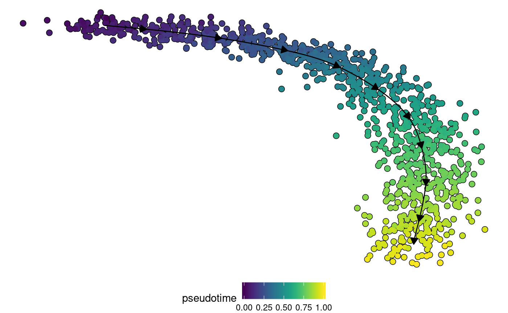
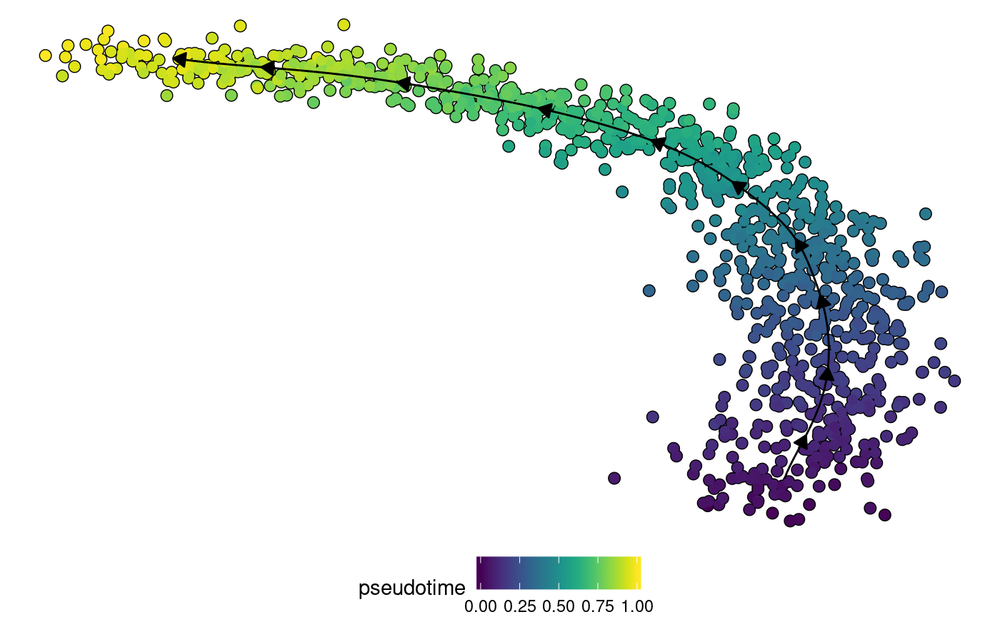

vignettes/create_ti_method_docker.Rmd
create_ti_method_docker.RmdThis vignette describes how to include your own method into the dynverse workflow. We’ll illustrate this with a very basic method: using one of the components of a PCA as the pseudotime. The files for this example are also available at https://github.com/dynverse/comp1.
There are two main ways to add a new method:
A TI docker requires at least three files.
definition.yml)An example of a definition.yml file (as can be found on the github):
name: component_one
image: dynverse/comp1
parameters:
component:
type: integer
lower: 1
upper: 10
default: 1
input:
expression
input_optional:
start_cells
output:
- linearThis yaml file contains:
The name of the image to use, can be a local name or a name from the docker hub
A named list of parameters for the method. Each parameter should at least have the following two properties:
Each type can have addition properties, which define the parameter space
| type | properties |
|---|---|
| numeric | lower, upper, trafo |
| numeric_vector | len, lower, upper, trafo |
| integer | lower, upper, trafo |
| integer_vector | len, lower, upper, trafo |
| logical | |
| logical_vector | len |
| discrete | values, trafo |
| discrete_vector | len, values |
A list of required or optional inputs, can be:
| input | File | Description |
|---|---|---|
| expression | expression.csv | The normalised expression |
| counts | counts.csv | The raw counts |
| start_cells | prior_information.json | One or more start cell identifiers |
| end_cells | prior_information.json | One or more end cell identifiers |
| n_end_states | prior_information.json | The number of end states |
| n_start_states | prior_information.json | The number of start states |
| grouping_assignment | prior_information.json | Named character vector linking the cell identifiers to different states/branches |
| n_branches | prior_information.json | Number of states/branches, including start, end and intermediary states |
| grouping_network | prior_information.json | Dataframe containing the known network between states/branches. Contains a from and to column |
| time | prior_information.json | Named numeric vector linking the cell ids to time points |
| marker_features_id | prior_information.json | Genes/features known to be important in the dynamic process |
A list of outputs, some of which contain enough information to construct a trajectory:
| name | Required files | Optional files | Description | Creates trajectory | Required outputs |
|---|---|---|---|---|---|
| cluster_graph | milestone_network.csv | Creates a trajectory by using a cell grouping and a given network between these cell groups | ✔ | grouping | |
| dimred | dimred.csv | dimred_milestones.csv | Adds the dimensionality reduction of each cell, and, optionally also the dimensionality reduction of every milestone. Any number of dimensions can be used. | ||
| dimred_projection | dimred.csv, dimred_milestones.csv, milestone_network.csv | milestone_ids.json | Creates a trajectory using the dimensionality reduction of cells and milestones, combined with the milestone network, to project each cell on the paths between the milestones. | ✔ | |
| grouping | grouping.csv | group_ids.json | Add a cell grouping, a single value for every cell which assigns it to one group | ||
| linear | pseudotime.csv | Creates a linear trajectory from pseudotime | ✔ | ||
| pseudotime | pseudotime.csv | Add pseudotime, a single value for every cell which denotes its progression from start to finish | |||
| trajectory | milestone_network.csv, progressions.csv, milestone_percentages.csv | divergence_regions.csv, milestone_ids.json | Creates a trajectory using a milestone network and progressions OR milestone percentages (one of either is required) | ✔ |
Dockerfile
An example of a Dockerfile (as can be found on the github):
FROM rocker/tidyverse
ADD . /code
ENTRYPOINT Rscript /code/run.RIn this example, we add all the files present in the current working directory (which contains the run.R file) to the /code directory.
All dependencies of the method should be installed in this Dockerfile (or from parent docker images)
This file should always contain an entrypoint, which will be called when the TI method is run.
All input files requested in the definition.yml will be mounted in the /input directory of the docker. After inferring a trajectory, the method should write output files into the /output directory. An example (as can be found on the github):
library(dplyr, warn.conflicts = FALSE)
## Load data -----------------------------------------------
expression <- read.csv("/input/expression.csv", row.names=1, header = TRUE) %>%
as.matrix()
params <- jsonlite::read_json("/input/params.json", simplifyVector = TRUE)
if (file.exists("/input/prior_information.json")) {
priors <- jsonlite::read_json("/input/prior_information.json", simplifyVector = TRUE)
} else {
priors <- list()
}
## Trajectory inference -----------------------------------
# do PCA
pca <- prcomp(expression)
# extract the component and use it as pseudotimes
pseudotime <- pca$x[, params$component]
# flip pseudotimes using start_cells
if (!is.null(priors$start_cells)) {
if(mean(pseudotime[priors$start_cells]) > 0.5) {
pseudotime <- 1-pseudotime
}
}
## Save output ---------------------------------------------
# output pseudotimes
tibble(
cell_id = names(pseudotime),
pseudotime = pseudotime
) %>%
write_csv("/output/pseudotime.csv")Now we’re all set to test the TI method on data. We first have to build the method (in shell)
docker build -t dynverse/comp1 .Although this docker can be run in any programming language, we’ll run it here using the dynwrap workflow. First, we have to wrap the docker into a method function.
library(dynwrap)
ti_comp1 <- create_docker_ti_method("dynverse/comp1")If the method is on the docker hub, it can also be pulled
ti_comp1 <- dynwrap::pull_docker_ti_method("dynverse/comp1")## The option 'stevedore.spec.path' not set - using temporary dir## Pulling from dynverse/comp1 latest
## Digest: sha256:6bddb98cf122c395c577d9c9748f7be69eebf4c15bc93072858819d46900ca9d
## Status: Image is up to date for dynverse/comp1:latest## Extracting method definition from image definitions.yml fileThen we’ll use some test data
ncells <- 1000
pseudotime <- runif(ncells)
expression <- matrix(
c(
(pseudotime - 0.5) ** 2,
sqrt(pseudotime + 20),
pseudotime
),
ncol = 3,
dimnames = list(as.character(rep(seq_len(ncells))), as.character(c("A", "B", "C")))
)
expression <- expression + rnorm(length(expression), sd = 0.02)
start_cells = rownames(expression)[which.min(pseudotime)]
counts <- round(expression)
task <- wrap_expression(
expression,
counts
) %>% add_prior_information(start_cells=start_cells)Now infer a trajectory
model <- infer_trajectory(task, ti_comp1())## input saved to /tmp/RtmpvP3RdH/input:
## expression.csv
## params.json
## output saved in /tmp/RtmpvP3RdH/output:
## pseudotime.csvif ("dynplot" %in% rownames(installed.packages())) {
dynplot::plot_dimred(model, color_cells = "pseudotime" , expression_source = task$expression)
}
Give some optional prior information
model <- infer_trajectory(task, ti_comp1(), give_priors = "start_cells")## input saved to /tmp/RtmpvP3RdH/input:
## expression.csv
## params.json
## prior_information.json
## output saved in /tmp/RtmpvP3RdH/output:
## pseudotime.csvif ("dynplot" %in% rownames(installed.packages())) {
dynplot::plot_dimred(model, color_cells = "pseudotime" , expression_source = task$expression)
}